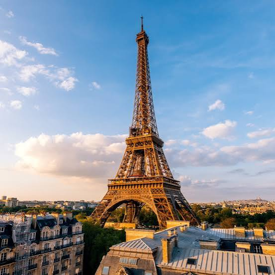

🗼
Famous landmarks
Discover iconic places such as the Eiffel Tower and the Louvre.
See attractions →Discover the charm, landmarks and everyday magic of Paris — the beautiful capital of France.

Discover iconic places such as the Eiffel Tower and the Louvre.
See attractions →Read simple travel tips to help prepare for your Paris trip.
Open travel guide →Enjoy cafés, art, architecture and the atmosphere of the city.
Discover more →Paris is often called the City of Light.
| Country | Currency | Language |
|---|---|---|
| France | Euro (€) | French |